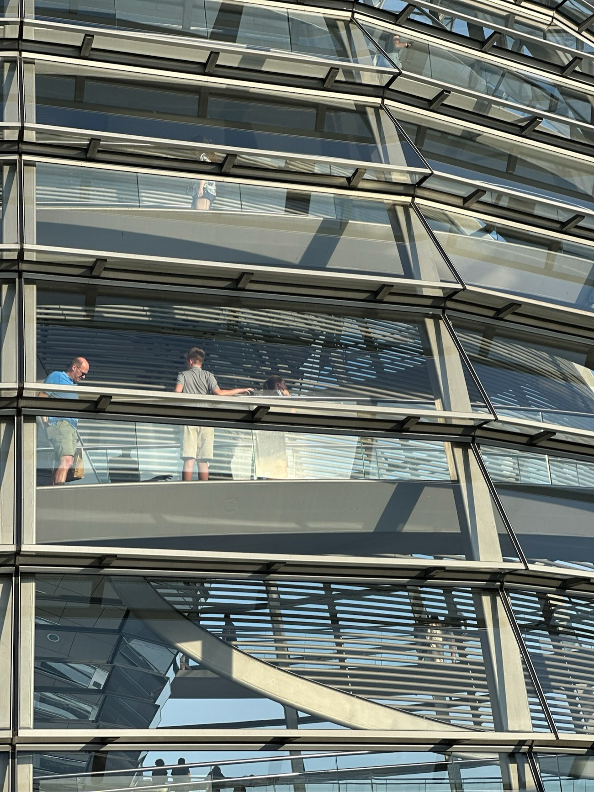
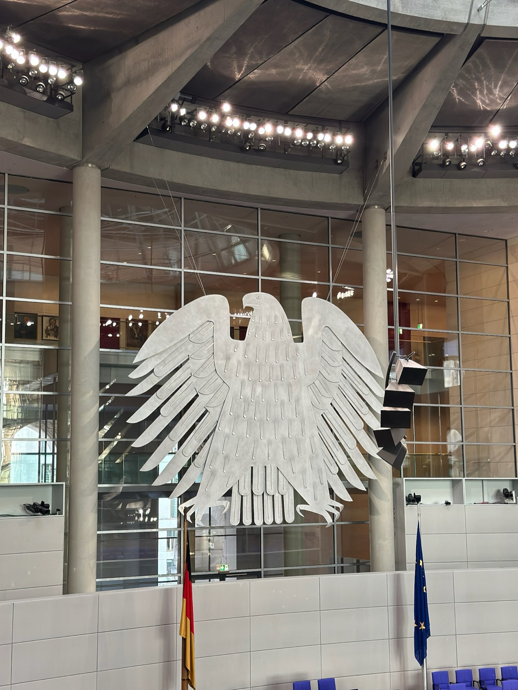

Eine Gesellschaft, die keine Vision von ihrer Zukunft hat, ist dem Zufall ausgeliefert.
Oskar Negt
Unsere Gesellschaft erlebt eine Transformation in Echtzeit – und das auf gleich mehreren Ebenen: Der Klimawandel stellt unsere Wirtschaftsstrukturen infrage, Digitalisierung und Künstliche Intelligenz verändern die Art, wie wir arbeiten, lernen und leben. Gleichzeitig sehen wir, wie unsere Gesellschaft altert, soziale Spannungen zunehmen und globale Unsicherheiten wachsen. Kurz: Die Welt dreht sich schneller – und Deutschland steht mittendrin.
Umso bemerkenswerter ist, wie unbewegt große Teile des politischen Systems wirken. Selbst der Vorschlag, ein 500-Milliarden-Euro-Sondervermögen per Grundgesetzänderung auf den Weg zu bringen, wirkt mehr wie ein finanzpolitisches Reparaturprogramm als wie ein strategischer Aufbruch. Wir verwalten, was längst gestaltet werden müsste. Wir verhandeln, wo eigentlich Führung gefragt wäre.

Ein „Weiter so“ reicht nicht mehr aus. Nicht in Strukturen. Nicht in Prozessen. Und schon gar nicht im Denken. Was Deutschland jetzt braucht, sind nicht bloß politische Mehrheiten, sondern eine klare Richtung. Ein Zielbild. Eine geteilte Vision. Ein neues Narrativ, das Orientierung gibt – in einer Zeit, die aus dem Takt geraten ist.
CDU/CSU und SPD verhandeln derzeit über die Bildung einer neuen Bundesregierung. Und sie tun das in professioneller Präzision: 16 Arbeitsgruppen, ein koordinierender Lenkungskreis, über 250 Beteiligte. Ein strukturierter Prozess – keine Frage. Aber strategisch bleibt er auffallend defensiv. Der Fokus liegt nicht auf dem, was möglich ist, sondern auf dem, was nicht zerbrechen darf. Maßnahmen werden abgestimmt, Zuständigkeiten verhandelt, Formulierungen geglättet. Aber: das große Ganze fehlt.
Darin liegt das Dilemma: Koalitionsverhandlungen sind keine Visionsprozesse.
Sie entstehen aus Wahlergebnissen, nicht aus Zukunftsbildern. Es geht um Machtbalance, nicht um Co-Kreation. Die Verfahren sind technisch – nicht kulturell. Zeitdruck statt Tiefe. Einigung statt Erneuerung. Was fehlt, ist der strategische Überbau. Kurz gesagt: Koalitionsverhandlungen schaffen politische Architektur. Aber sie bieten keine strategische Navigation durch die Transformation, die unser Land eigentlich bräuchte. Die Herausforderungen, vor denen Deutschland steht, lassen sich nicht mehr in Ressortlogiken oder Legislaturperioden denken. Sie sind vernetzt, langfristig, systemisch. Es geht um nicht weniger als eine wirtschaftliche Neuausrichtung, eine kulturelle Erneuerung und eine gemeinsame Vorstellung davon, was Deutschland im Jahr 2035 sein will und eine klare Haltung zur Rolle Deutschlands in Europa und der Welt. Dafür braucht es mehr als Maßnahmen. Es braucht Richtung. Es braucht eine Vision.

Mit dem Zukunftsrat des Bundeskanzlers gibt es seit 2022 bereits ein beratendes Gremium – thematisch relevant, fachlich stark. Aber er ist kein strategischer Gesamtprozess. Keine Bühne für gesellschaftlichen Dialog. Kein Raum für ein gemeinsames Narrativ. Was wir also brauchen, ist ein zweiter Prozessstrang. Einer, der parallel zur Regierungsbildung verläuft – nicht als Konkurrenz, sondern als Ergänzung. Ein Format, das nicht nur operativ stabilisiert, sondern strategisch inspiriert. Was es dafür braucht, ist keine Revolution – sondern die bewusste Erweiterung des politischen Werkzeugkastens. Ein Prozess, der Zukunft ernst nimmt. Und der sie gemeinsam entwirft.
Auf Basis unserer Erfahrungen mit Visions- und Strategieprozessen in der Wirtschaft – und im Bewusstsein der Besonderheiten unseres politischen Systems – sind wir überzeugt: Es braucht fünf zentrale Bausteine für eine zukunftsfähige politische Architektur. Damit Deutschland eine klare Vision bekommt – und die Grundlage, seine Zukunft aktiv zu gestalten:
1. Ein parteiübergreifender Zukunftsrat 2.0
Ein gemeinsames Gremium aus Politik, Wissenschaft, Wirtschaft und Zivilgesellschaft – mit einem klaren Auftrag: ein Zielbild für Deutschland im Jahr 2035 zu entwickeln. Offen, konkret und verständlich. Nicht als Symbol, sondern als echte Orientierungshilfe – über Parteigrenzen und Wahlperioden hinweg.
2. Ein gemeinsames Leitbild für Regierungshandeln
Es braucht mehr als Programme. Es braucht eine gemeinsame Haltung, die Entscheidungen, Kommunikation und Zusammenarbeit leitet. Die Frage lautet: Wofür steht diese Regierung? Und was ist ihr Beitrag – für Deutschland, für Europa und für die nächsten Generationen?
3. Klarheit über Wirkung statt Denken in Ressorts
Politik muss nachvollziehbar sein. Maßnahmen sollten so geplant werden, dass klar ist, was sie bewirken – und wie sie zusammenhängen. Nicht alles ist gleich wichtig. Aber alles sollte zu einem übergeordneten Ziel beitragen.
4. Eine neue politische Zusammenarbeitskultur
Wie eine Regierung intern arbeitet, beeinflusst, ob Wandel gelingt. Es braucht mehr Verantwortung, weniger Abgrenzung. Mehr Miteinander, weniger Zuständigkeitsdenken. Eine Regierung als lernendes System – das auch in schwierigen Zeiten im Gespräch bleibt.
5. Erzählbare Transformation
Jede Veränderung braucht eine Geschichte. Ein Narrativ, das nicht nur erklärt, was geschieht, sondern wofür es geschieht. Für Bürger:innen. Für Behörden. Für Bündnispartner. Für alle, die mitgestalten sollen. Denn wer Menschen für Veränderung gewinnen will, muss mehr bieten als Paragraphen: Er muss Sinn stiften – verständlich, ehrlich und einladend.
Koalitionsverträge machen regierungsfähig. Zukunftsprozesse machen richtungsfähig.
Beides zusammen schafft die Grundlage für echte Gestaltungskraft. Für eine Politik, die nicht nur reagiert, sondern prägt. Nicht nur verwaltet, sondern führt. Und genau hier liegt auch unsere Haltung bei Yorck Consulting: Wir glauben, dass Transformation dort gelingt, wo Klarheit, Haltung und Dialog zusammenkommen. Wo nicht nur Strukturen verändert werden – sondern Denkweisen, Narrative und Zusammenarbeit.
Denn wer Zukunft gestalten will, braucht mehr als operative Exzellenz. Er braucht ein Zielbild, das trägt damit wir unsere Zukunft aktiv gestalten können.
Bis zur nächsten Ausgabe! 🚀
eure Yorckies
← Zurück zu Insights